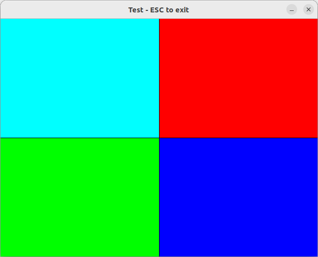
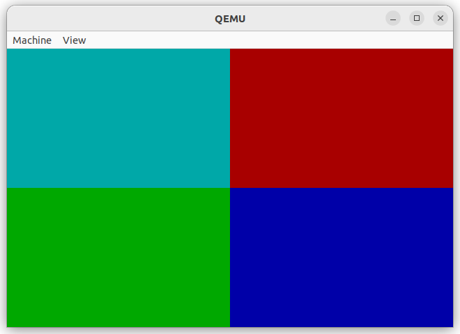
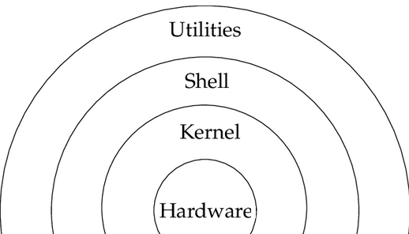
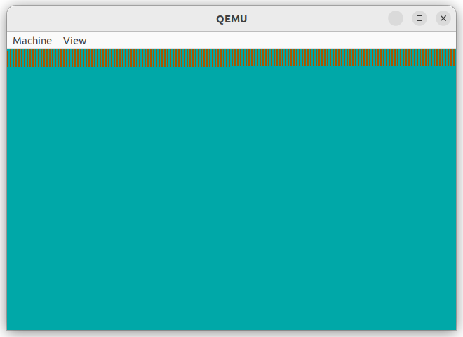

What
To further enhance the CustomOS we need a shell. A shell is literally the “shell” around the kernel that a user can interact with.
Since 2010 there is a new programming language called “Rust” that was developed by Mozilla Research. I’ll try to write the Shell for my CustomOS in Rust and share my experiences.
So far it’s been an hour on and off playing with Rust for a couple of days. Rust is new to me, but I’ve been devloping C/C++ applications for a long time. Let’s try to fill that graphics buffer from last time with code written in Rust.

Contents
Shell
In literature a shell is conceptionally often shown as:

In simple terms: the kernel speaks to the hardware, the shell speaks to the kernel. On Unix-based Systems users can interact with the shell on command-line terminals or run utilities, the software, to do so.
#ä# Tasks of a Shell
In order to do this a typical shell
- receives text-based input from the user
- responds with text
and the text, or commands can be something along the lines of
- cd - change to another directory
- ls - list/show the contents of the directory
- cat - concatinate/show the contents of a file
- exec - run/execute a file
and so on
Implementing Shells
Implementation-wise this means writing a lot of string-parsing code. Along the lines of
if (strncmp(command, "cat ", 4) == 0) {
showDirectoryContents(command, params[0]);
}
Not particularly difficult, but tedious and error-prone due to many for loops and printf-family functions on ‘\0’ terminated char arrays.
It’s not that we’re building something safety critical, but format string bugs, buffer overflows and double free bugs are among the most common security flaws among C/C++ code to date.
Rust
Rust compiles using the same LLVM used underneath the Clang C/C++ compiler. It could be a good match to experiment with for writing the Shell for the Custom OS.
I’ve found developing complex code and going head first into the rabbit hole is the best way to learn a new language. That approach has a much steeper learning curve than following the safe path of online tutorials with cherry-picked examples where the langauge excels.
Red Herrings
I remember all to well the single-line Quicksort implementation in Haskell that was mentioned all over text books. Yes, it is Quicksort in one line. But in practice it’s highly inefficient compared to any .sort(..) function in any common language and completely unusable apart from marvelling at in academia.
qsort xs = concat [qsort [y | y <- tail xs, y < x] ++ x : qsort [y | y <- tail xs, y >= x] | x <- take 1 xs]
Hence I’ve found it’s much better to just try a langauge for something, see where it leads and ignore all cherry-picked examples of where a language may excel.
First Impressions
My first impression of Rust is that it’s
- earily close to C/C++ as is to be expected given it compiles using LLVM that was developed for the clang C/C++ compiler as an alternative to Msvc/Gcc and so on.
- given all the built-in safe-guards and protection it’s probably on a higher level of abstraction than C and probably a lower level of abstraction than modern C++-11.
- in contrast to C/C++ where you can drop down to lower levels - all the way from templates and shared_ptrs to assembly - it likely locks you into that level of abstraction with lots of automatic optimization that, in practice, will be hard to control.
- it likely won’t be more capable than C/C++ as it’s built with the same LLVM underneath
- nobody in industry will rewrite all of their existing code just because there is a new kid on the block that has yet to prove itself and may dissappear at any time. It will be very important to be able to easily be able to mix Rust with C/C++ which is what made Python so popular as it does this really well.
- but the cargo package manager and the community mindset is so highly useful that it may have the potential to become a major player
Why try
There’s a couple of reasons why Rust could be interesting for this task.
- it’s a massive hype and I haven’t had the chance to try it yet.
- I need to get acquanted with it for work. I’d like to be able to make informed decisions.
- Rust is apparently a good fit for embedded systems. These are closely related to Custom OSes.
- the borrowing, mutable, safe/unsafe seems to be a good fit to avoid the above mentioned common string-parsing bugs in C/C++ code
- since there’s LLVM underneath I don’t see many potential issues apart from boiler-plate and uncontrollable dependencies being pulled in.
Approach
So how to approach this?
So far we have
- a
char * screenBufferrepresenting the pixels on the screen we need to fill - and an interrupt-driven
_keyboardInterruptthat passes a keyboard scancode and converted char of the keyboard input
To connect this to Rust we need to
- write Rust code, that
- produces a binary comparible object, that
- can be linked with the rest of the CustomOS kernel
- such that we can call the Rust-functions from C
And in order to approach this a little more softly, we can first
- write a standard desktop application, that
- displays a buffer representing pixels
- and learn to manipulate it in Rust with that
Displaying an Image Buffer with Rust
a first Hello World
We can install the Rust compiler with
sudo apt install Rustc
and compile a hello world
fn main() {
println!("Hello World!");
}
Step 1, Rough start
To display an image buffer I came across the crate “eFrame” and tried to use it.
Installing Libraries
Looks like we need the cargo package manager
sudo apt install cargo
To install a crate it seems we need to have initialised the current working directory and it’s not “install”, but “cargo add”, so
cargo init
cargo add egui
Compiler Compatibility
Turns out “epaint v0.25.0” requires requires Rustc 1.72 and we have 1.70.
Looks like the Rust compiler breaks compatibility so quickly that Debian package maintainers can’t keep up.
And so we do have to install Rust the recommended way.
Non-Standard Installation
sudo apt remove Rustc
curl --proto '=https' --tlsv1.2 https://sh.Rustup.rs -sSf | sh
Really unnerving to install software like that.
It installs to $HOME/.cargo/bin and adds aliases to .profile and .bash.rc as if /usr/bin didn’t exist.
Workspace Folder structure auto-moving
I had my code in the root directory. the cargo init seemed to have moved it in a wierd place.
./example-02/src/main.rs
./example-02/ui.rs
It copied ui.rs to main.rs and moved it to src/ automatically, but okay.
Dependency Hell
Try to add that crate now
cargo add eframe
It install 185 crates (!). x11rb, wayland, xkeysm, cpu features, miniz_oxide (a compression library), …
and still fails
egui::CtxRef, frame: &mut epi::Frame<'_>) {
| ^^^^^^ not found in `egui
example codes with wried include_bytes macro
In many examples online there is the include_bytes function.
let image_data = include_bytes!("rust-logo-256x256.png");
From my understanding it is a macro. So does that mean the image gets compiled into the executable uncompressed?
with evern more missing dependencies
use image::GenericImageView;
| ^^^^^ use of undeclared crate or module `image`
more bloat
So we need the image library
cargo add image
That installes 294 fruther crates: jpeg-decoder, tiff, event-listener, zune-inflatem ….
I just want to display an image here!
and broken libs
13 | fn update(&mut self, ctx: &egui::CtxRef, frame: &mut epi::Frame<'_>) {
| ^^^^^^ not found in `egui`
First Step Conclusion
- Rust doesn’t solve unfriendly libraries with unclean/instable interfaces
- extremly fine-granular libraries that cause hundreds of crates to be installed
- we need to maneuver around broken libraries
Step 2, Promising Results
In the meantime I had researched some less bloated approaches
Different Libraries
Image and minifb seem to be far lighter and hence less error-prone.
MiniFB is actually a wrapper [1] around a C-Library minifb [2]. It is similar to the “rawdraw” library I have used.
It’s basically a plattform-abstraction to display an image buffer on various platforms (android, opengl, ios, macos, wayland, x11, windows, webassembly, …).
So let’s try that instead.
Install libraries
mkdir image-viewer
cd image-viewer/
cargo init
cargo add image
cargo add minifb
Installs 99 dependencies, but oh well.
Adapt the code
Adapted from examples
use minifb::{Key, Window, WindowOptions};
const WIDTH: usize = 640;
const HEIGHT: usize = 480;
fn main() {
let mut buffer: Vec<u32> = vec![0; WIDTH * HEIGHT];
let mut window = Window::new(
"Test - ESC to exit",
WIDTH,
HEIGHT,
WindowOptions::default(),
)
.unwrap_or_else(|e| {
panic!("{}", e);
});
window.limit_update_rate(Some(std::time::Duration::from_micros(16600)));
while window.is_open() && !window.is_key_down(Key::Escape) {
for (idx, val) in buffer.iter_mut().enumerate() {
let _y = idx / WIDTH;
let _x = idx % WIDTH;
if 240 > _y && 320 > _x {
*val = 0x00ffff; // top-left, aqua
}
if 240 > _y && 320 < _x {
*val = 0xff0000; // top-right, red
}
if 240 < _y && 320 > _x {
*val = 0x00ff00; // bottom-left, green
}
if 240 < _y && 320 < _x {
*val = 0x0000ff; // bottom-right, blue
}
}
window
.update_with_buffer(&buffer, WIDTH, HEIGHT)
.unwrap();
}
}
Pixel buffer shown on PC
cargo build
Learnings
In Rust, if you want to modify a buffer, you need to set it “mut” (“mutable”):
for i in buffer.iter_mut() {
*i = 0;
}
It’s possible to set hex values as in C/C++
*i = 0xff0000; // red
*i = 0x00ff00; // green
*i = 0x00ff00; // blue
There are C/C++ Idioms [3], Python Idioms [4]
Where in Python
for idx, val in enumerate(arr):
you can do
for (idx, val) in arr.iter().enumerate() {
In Rust, which is cool.
Wrapping C Libraries
I very briefly tried to wrap the “stb_truetype.h” single header library for TrueType-Font Rendering in Rust.
There is a guide for interoperability [5], but it seems a bit tedious.
It boils down to tagging structures #[repr(C)] to be C-Style memory aligned and extern "C" marking to make C functions accessible.
You can add a build.rswith something like
fn main() {
cc::Build::new()
.file("c_src/lib.c")
.include("c_include/lib.h")
.compile("library");
}
and cargo will run it during cargo build.
There’s a library for that
cargo add cc
Currently C++ can’t be wrapped effecively due to C++ name mangling.
Step 3, Filling the graphics buffer of our CustomOS from Rust
So we can show a raw image buffer on Linux and manipulate it.
Let’s see if we can get Rust to compile in a compatible way so we can link it to our CustomOS and use the code there.
First Try
extern "C" {
pub fn graphicsUpdate(
buffer: *mut cty::c_char,
const u16 width,
const u16 height
);
pub fn keyboardInterrupt(
const cty::c_char key,
const u8 scancode
);
}
fn keyboardInterrupt(const cty::c_char key, const u8 scancode) {
}
fn graphicsUpdate(buffer: *mut cty::c_char, u16 width, u16 height) {
for (idx, val) in buffer.iter_mut().enumerate() {
let _y = idx / width;
Multiple things wrong with that
Smaller issues
extern "C"goes in the same line as the functioncty::c_charneeds to be installed by crate- we need to add
#[no_mangle]
so we install an additional C compatibility library:
cargo add cty
and
#[no_mangle]
pub extern "C" fn <funktionsName>(...) {
C-Array needs conversion
buffer.iter_mut().enumerate() {
| ^^^^^^^^ method not found in `*mut i8`
Need to convert it. Found [6], so something like
let v = unsafe { slice::from_raw_parts(buffer as *cty::c_char, data_len as usize) };
that requires an additional library
use std::{ptr, slice};
cargo add slice
and won’t work in our case as seen later.
How to cast
Rust warns about incompatible types, neat.
Convert from u16 to usize by
usize::from(...)
Later found it’s easier to use “as” to cast:
value as usize;
Unused variables need prefix
We are forced to add “_” to unused variables to avoid warnings.
No resulting library
To get an actual object-file we need to
cargo Rustc -- --emit=obj
Check resulting library
nm -D shell-4c2220a1b1ab0f5d.o
doesn’t work, but
readelf -Ws --dyn-syms shell-4c2220a1b1ab0f5d.o
89: 0000000000000000 15 FUNC GLOBAL DEFAULT 40 keyboardInterrupt
90: 0000000000000000 971 FUNC GLOBAL DEFAULT 41 graphicsUpdate
Does, so our function did get exported to the library and is in global namespace.
Extend the Makefile
Cargo writes in a strange directory with a hash.
Quick hack in the makefile
shell/shell.o: shell/shell.rs
cd shell/ && cargo Rustc -- --emit=obj && cp target/debug/deps/shell-*.o shell.o
Incompatible Library
The resulting library was built for the default target which doesn’t match our CustomOS
file shell/shell.o
shell/shell.o: ELF 64-bit LSB relocatable, x86-64, version 1 (SYSV), with debug_info, not stripped
We need 32-bit and release, like the object file from the graphics.c C-code.
file graphics/graphics.o
graphics/graphics.o: ELF 32-bit LSB relocatable, Intel 80386, version 1 (SYSV), not stripped
Target Spec
Custom Target Spec Required
Tried the target
--target i686-unknown-linux-musl
But it expects a lot of missing symbols we haven’t/don’t want to implement in the CustomOS
- enumerate.rs
- core::panicking::panic
- mod.rs
- core::panicking::panic_in_cleanup
- __Rust_no_alloc_shim_is_unstable
- intrinsics.rs
- memcpy
- alloc.rs
- __Rust_alloc
- __Rust_alloc_zeroed
- __Rust_dealloc
- shell.rs
- Rust_eh_personality
- unwind_pr.h
- abort
- strlen
- malloc
- free
Turns out you can define a “panic-strategy” in a custom target spec.
Check Spec
We can output the custom target spec like so
Rustc -Z unstable-options --target=i686-unknown-linux-musl --print target-spec-json
Custom Target Spec
Found post about a similar issue on the osdev forums [7].
Mixed both specs together to get
i686-unknown-none-gnu.json
{
"llvm-target": "i686-unknown-none-gnu",
"data-layout": "e-m:e-p:32:32-p270:32:32-p271:32:32-p272:64:64-i128:128-f64:32:64-f80:32-n8:16:32-S128",
"linker-flavor": "ld.lld",
"linker": "Rust-lld",
"pre-link-args": {
"ld.lld": [
"--script=linker.ld"
]
},
"target-endian": "little",
"target-pointer-width": "32",
"target-c-int-width": "32",
"arch": "x86",
"os": "none",
"features": "-mmx,-sse,+soft-float",
"disable-redzone": true,
"panic-strategy": "abort",
"executables": true
}
We can build against it by
cargo Rustc --target i686-unknown-none-gnu.json --release -- --emit=obj
Need to rebuild standard libraries
Now we’re missing some standard libraries as they haven’t been built against our custom target spec
- core
- Result
- std
- Err
For this we add
-Z build-std
to the Rustc/cargo command-line. It automatically rebuilds the standard libs with the custom target spec.
In order to use that “-Z” command-line flag we need to switch to the nightly version of the rust compiler rustup default nightly.
restricted_std
Turns out lib.rs in the library “slice” requires “restricted_std”
error[E0658]: use of unstable library feature 'restricted_std'
The slice library depends on memset that we don’t have globally implemented in an accessable way for Rust.
Tried all sorts of things
#![no_std]
#![no_main]
#![feature(alloc_error_handler)]
#![feature(restricted_std)]
In the end I decided to just remove the library “slice” altogether.
Bloated libs
Often the libs are bloated and rely on libc or libmusl functions such as “memset”, “memcpy”, … or implementations from an even higher level of abstraction that may not be available on an embedded device or a very limited CustomOS like ours.
The only option is to not use them.
Not sure, but it seems Rust tries to compile all code at least once regardless of whether it is being used or winds up in the resulting binary?
Manipulating raw C-Array in Rust directly
Yes you can, at the expense of not being able to use language features that benefit Rust, but as the only option to avoid dependency bloat.
So if we can’t use slice and can’t convert the C-Array to mutable vec, can we at least manipulate the memory directly in an unsafe way?
You can with many caveats.
- you’ll skip all the protection that Rust has going for itself
- the pointer arithmetic in Rust is not that great
- tiny changes in the code trigger optimizations that uncontrollably drag in unwanted features
Issues on resource-constrainted embedded devices
In general with Rust on embedded devices I see some issues:
- these unwanted optimizations may rely on functions (in our case exception types for casting errors, memset, memcpy, …) that need to be implemented or “missing symbol” errors occur
- and they all cause the resulting binary to uncontrollably increase in size
First working write to Custom OS graphics buffer from Rust
The following code
- without the slice library and hence not converting the C-Array to a mutable
vec - manipulating the C-Array directly in an unsafe block
- only setting every 2nd pixel to keep the Rust compiler from “optimizing” to the not implemented
memset - a fixed for-loop range to avoid cast that would otherwise require exception code and related libraries
does work:
use core::ptr;
#[no_mangle]
pub extern "C" fn keyboardInterrupt(_key: cty::c_char, _scancode: u8) { }
#[no_mangle]
pub extern "C" fn graphicsUpdate(buffer: *mut cty::c_char, width: u16, height: u16) {
unsafe {
for i in 1..2000 {
ptr::write(buffer.wrapping_add(2*i), 6);
}
}
}
It’s build with the above mentioned target-spec
i686-unknown-none-gnu.json
and the following line in the makefile
shell/shell.o: shell/shell.rs
cd shell/ && cargo Rustc --target i686-unknown-none-gnu.json -Z build-std --release -- --emit=obj && cp target/i686-unknown-none-gnu/release/deps/shell-*.o shell.o
The resulting shell.o object file can be directly linked to the excutable like a C-Library.
We can just call it from anywhere in C, since it’s in global namespace anyway
graphicsUpdate(VGA, screenWidth, screenHeight);
The results looks like this

Enhancing the code
We can implement memset in rust
#[no_mangle]
pub unsafe extern fn memset(s: *mut u8, c: i32, n: usize) -> *mut u8 {
let mut ii = 0;
while ii < n {
*s.offset(ii as isize) = c as u8;
ii += 1;
}
s
}
and then the following code works
#[no_mangle]
pub extern "C" fn graphicsUpdate(buffer: *mut cty::c_char, w: u16, h: u16) {
for y in 0..h {
for x in 0..w {
let mut v = 0;
if h/2 >= y && w/2 >= x {
v = 3; // top-left, cyan
}
if h/2 >= y && w/2 <= x {
v = 4; // top-right, red
}
if h/2 <= y && w/2 >= x {
v = 2; // bottom-left, green
}
if h/2 <= y && w/2 <= x {
v = 1; // bottom-right, blue
}
unsafe {
ptr::write(buffer.wrapping_add(usize::from(x + y*w)), v);
}
}
}
}
With it the Custom OS shows
Conclusion
So how do I feel about Rust…
- Pointer arithmetic is not that great in Rust
- the language unintentionally drags in a log of bloat
- language, compiler and libs are very unstable so I expect to have to adapt code when I come back in the future
But
- I was able to compile code and link it to a C program for a very custom environment
- Rust does in parts have a very attractive syntax
- being able to use some of the Python idioms like “enumerate” is great
- it excels where C/C++ lacks: a package manager and a vibrant community outside of pure industry that share code
It’s funny how the complaint of the bloat of cargo cult programming [8] is often heard especially among embedded developers and here we have a language with a package manager called “cargo” that brands itself as suitable for embedded devices.
To me it has a web-developer feel to it and that fits the picture as it’s written by the manufacturer of a very slow and inefficient web browser - that I do use daily though.
Ironically the package manager that is one of Rusts greatest advantages is also its greatest weakness: it’s easy to just drag in additional crates and that behaviour causes the bloat: interface instability and compatibility issues, executable size, long compile times, wasteful resource handling, and so on.
Regarding the CustomOS…
- we can call a C function from Rust and fill that graphics buffer
But we’ll need to implement some functions Rust libraries depend upon to be able to use the langauge properly
Otherwise every miniscule change of the code written in Rust will trigger missing symbols errors
1] https://github.com/emoon/rust_minifb 2] https://github.com/emoon/minifb 3] https://maulingmonkey.com/guide/cpp-vs-rust/ 4] https://benjamincongdon.me/blog/2018/03/23/Python-Idioms-in-rust/ 5] https://docs.rust-embedded.org/book/interoperability/c-with-rust.html 6] https://stackoverflow.com/questions/50376516/creating-a-vec-in-rust-from-a-c-array-pointer-and-safely-freeing-it 7] https://forum.osdev.org/viewtopic.php?f=13&t=41546 8] https://en.wikipedia.org/wiki/Cargo_cult_programming